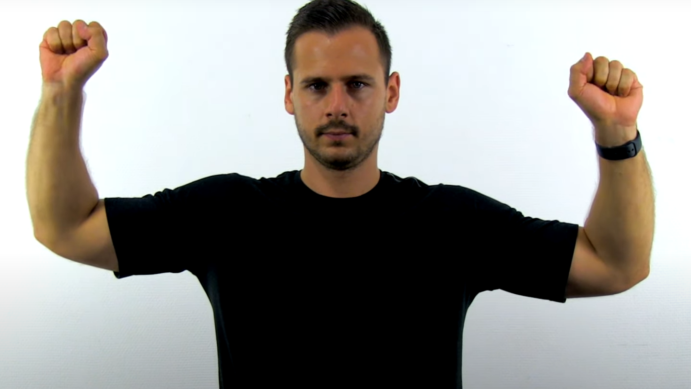

Peripheral Arterial Disease checklist
WIPPER and the Intro
General Look of the Patient
Vital Signs (Mention)
Inspection
Gangrene definition
Gross description of a necrotic tissue with mummification and black discoloration.
Wet gangrene is infected, looks black and unclearly demarcated, needs emergent amputation for risk of sepsis.
Dry gangrene is not infected, dark and well demarcated.
Finger tip necrosis is a sign for Buerger’s disease aka thromboangiitis obliterans.
Guttering of veins
In a warm room the veins of a normal foot are dilated and full of blood, even when the patient is lying horizontally.
In an ischaemic foot the veins collapse and sink below the skin surface to look like pale-blue gutters.
Palpation
All Pulses (Compare right and left!)
Special - Buerger’s Test
Interpretation of Buerger’s Test
- In a healthy individual, the legs should remain pink even up to 90°.
- Development of pallor indicates inadequate perfusion against gravity.
- Record the angle of pallor (Buerger’s angle): the lower the angle, the more severe the disease.
- When sitting, legs may first appear blue (deoxygenated blood in ischemic tissue), then turn red (reactive hyperemia).
This indicates ischemia and correlates with delayed capillary filling.
Capillary Filling Time
After elevating the legs, patients should be asked to sit up and dangle their feet over the side of the couch.
A normal leg and foot will remain a healthy pink colour, whereas an ischaemic leg slowly turns from white (after elevation) to pink and then takes on a suffused purple-red colour.
The time taken for the colour of the foot to change from white to pink is the capillary filling time, and depends upon the degree of arterial obstruction.
In severe ischaemia it may be as long as 15-30 seconds. A red-purple foot is indicative of severe ischaemia.
Auscultation
Further Investigations and Theoretical Knowledge
Roos stress test

Ask the patient to abduct his shoulders to 90 degrees, with maximal external rotation on.
Test is positive when patient can’t keep this for more than 3 minutes.
Ankle Brachial Pressure Index (ABPI)
It is a ratio between the blood pressure measured in the ankle and that measured in the brachial artery, used to assess lower limb perfusion.
- Left ABPI = (Highest pressure of either left Post. tibial artery or left dorsalis pedis) / (Highest brachial pressure (R/L))
- Right ABPI = (Highest pressure of either right Post. tibial artery or right dorsalis pedis) / (Highest brachial pressure (R/L))
Normal ranges:
- Normal → \(0.8 - 1.3\)
- Mild or moderate arterial disease → \(0.5 - 0.79\) (claudication)
- Severe arterial disease → \(<0.5\) (Rest pain, ulceration, gangrene → critical limb ischemia)
- Calcified vessels → \(>1.3\) (suggestive of DM, vasculitis, atherosclerosis → need duplex US/CT angio)